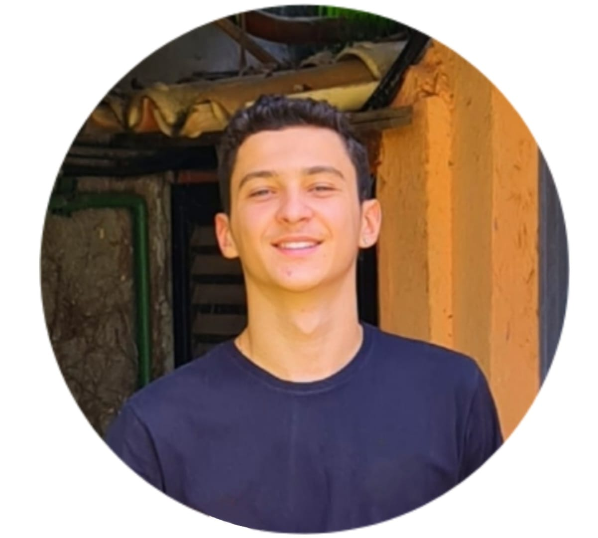
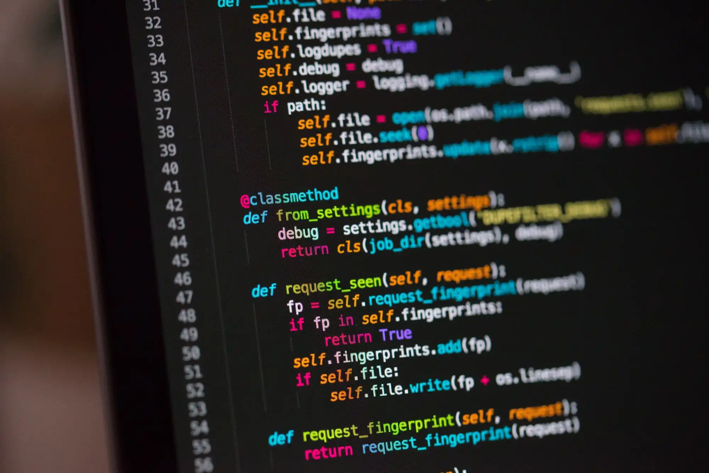
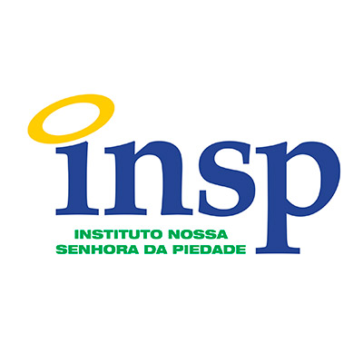
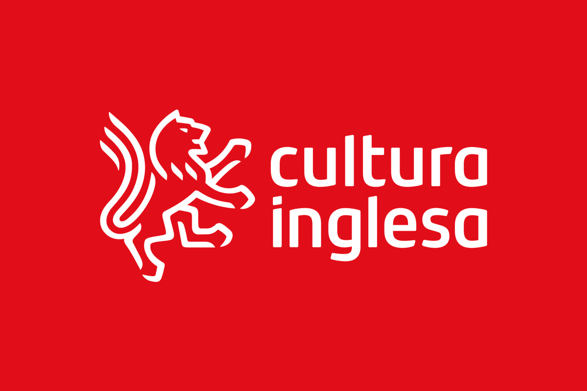
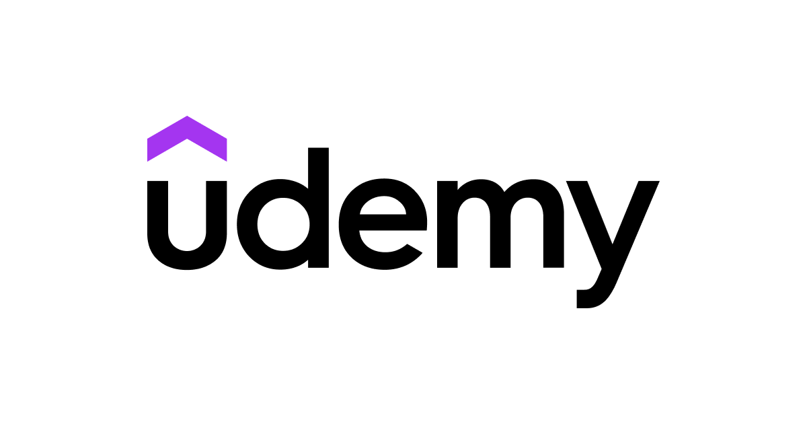
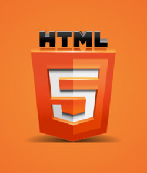
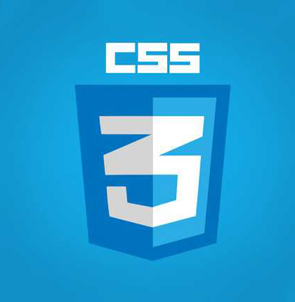
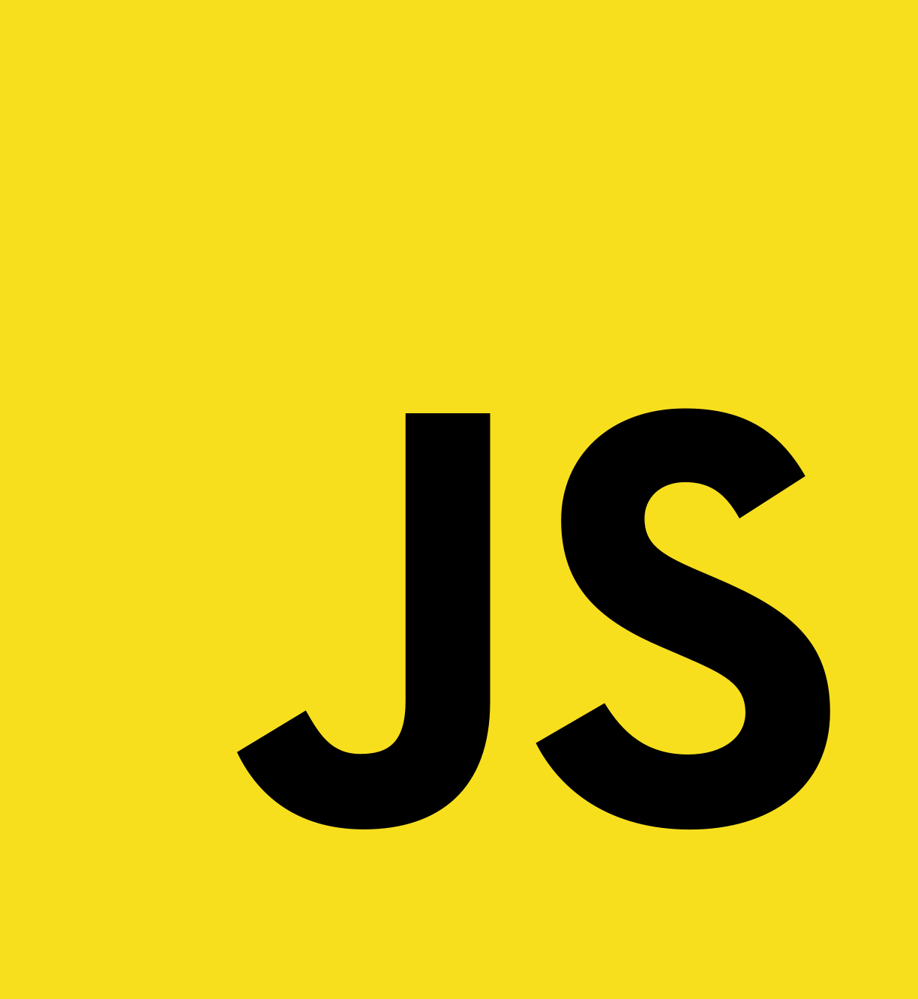

Estou sempre em busca de desafios que me permitam crescer, aprender e transformar cada obstáculo em uma oportunidade de evolução.
Contate-me
-
Projetos
Participei do desenvolvimento de um simulador de gastos em apostas esportivas, projetado para calcular e analisar cenários financeiros com base em diferentes estratégias e valores apostados.

Simulador de gastos em apostas esportivas

-
Acadêmico
Instituto Nossa Senhora da Piedade
Cultura Inglesa
IBMR - Barra
S.O.S - Tecnologia e Educação
Udemy



-
Experiência
Desenvolvimento de sites e aplicações com design responsivo e dinâmico, integrando funcionalidades modernas como carrosséis interativos e filtros de busca.
HTML, CSS, JavaScript, MWTPL



Quem sou eu
"Sou um profissional comprometido e focado no desenvolvimento tecnológico, com sólida experiência em HTML, CSS e JavaScript. Possuo facilidade para me adaptar a novas tecnologias e linguagens, demonstrando proatividade e agilidade em processos de aprendizado. Estou sempre em busca de evoluir profissionalmente, aprimorando minhas habilidades e conhecimentos para entregar resultados de qualidade. Meu objetivo é contribuir em projetos inovadores, oferecendo soluções práticas e eficientes que agreguem valor ao negócio e ao time, promovendo um impacto positivo por meio da tecnologia."